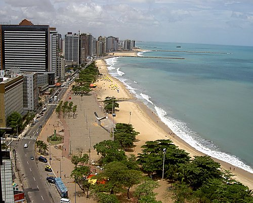

O Maranhão é um estado localizado na região Nordeste do Brasil, com uma população de cerca de 7 milhões de habitantes. Ele é conhecido por sua rica cultura, história e belezas naturais. Entre os principais pontos turísticos estão os Lençóis Maranhenses, um parque nacional com dunas de areia e lagoas de água cristalina, e a cidade de São Luís, que possui um centro histórico cheio de arquitetura colonial. Além disso, o Delta do Parnaíba, que fica na fronteira com o Piauí, é uma atração famosa por sua beleza natural e biodiversidade. O governador atual do Maranhão é Carlos Brandão. O estado também é conhecido por sua música, festas tradicionais e culinária típica, como o arroz de cuxá.
